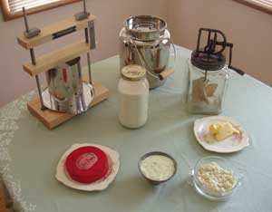
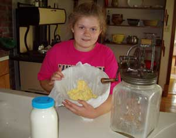
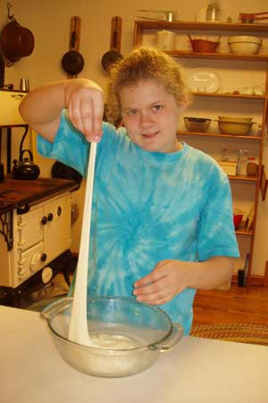

When our two Dutch Belted cows have their calves in spring or early summer, they each give about 5 gallons of milk a day. Our home abounds with milk, cheese and other dairy products during this time, but we also have the work of the other farm animals, a large garden and other family chores. Here’s how the production of cheese and dairy products, such as yogurt, ice cream and butter, is woven into our busy schedule.
First, we stagger the cows’ pregnancies by two months so the peak quantities of milk don’t coincide. The calves continue to nurse until they’re 9 months old, and by the time they’re 4 or 5 months old, they can consume all their mothers’ milk. But we have more milk than the calves can drink from late spring to early autumn - the busiest time of the year on our homestead.
Drink all the milk you can. Raw milk is more of a food than a beverage, and I love its complex, delicious flavor. We also give milk to neighbors, especially those who treasure it from childhood memories. Most people have been frightened into thinking that the bacteria in raw milk are dangerous, but unless the milk is contaminated, I feel it’s as safe as human breast milk, which also contains natural bacteria.
I’m careful about rinsing, washing and sanitizing all our milk equipment to assure that it won’t get contaminated and the milk will therefore have a shelf-life of a week in the refrigerator. We use about a 5-percent bleach solution for plastic and a dilute iodine solution for stainless steel. The iodine and other basic home cheese-making equipment can be found online or in beer- and wine-making stores. For those who want to pasteurize milk, simply heat it to exactly 145 degrees Fahrenheit and hold it at that temperature for 30 minutes.
The cows give far more milk than what we can drink though, and when the first cow has her calf in April, the race begins. Yogurt is a daily staple at our house and it’s easy to make. I save about half a cup of yogurt from the previous batch and mix it with a quart of milk right from the cow. This mixture is kept at about 100 degrees until the next morning, when I wake up to fresh yogurt for breakfast. Either electric yogurt-makers or insulated containers can keep the mixture at the right temperature.
Making cheese at home is as simple as separating curds from whey. The curds contain the solid protein, and the whey has most of the lactose. Your “coagulating agent,” which causes milk to separate into curds and whey, will usually be vinegar or citric acid for soft cheeses, such as mozzarella or ricotta, and rennet for hard cheeses, such as cheddar. My big time-saver is to use the milk right after milking, when it’s about 90 degrees. This is the perfect temperature for separating curds and whey for soft cheeses, for adding a bacterial starter for hard cheeses and even the perfect temperature for yeast in bread-making. I can’t always begin making cheese right after milking, so I wrap a couple bath towels around my 10-liter milk container to maintain the milk’s temperature until other chores are done.
My favorite homemade cheese is mozzarella because it’s so fast. It takes 1 gallon of milk, citric acid and rennet, and only half an hour with a microwave. The other soft cheese I make is ricotta. It can be made from 1 gallon of whole milk (some recipes call for whey) and citric acid. If hung in cheesecloth for about half and hour, it’s moist and can be combined with herbs and spices and used as a dip for chips or vegetables. Hanging longer makes a dryer, firm cheese that is great for stir-fry or lasagna. Soft cheeses are bland, so flavor them with salt, garlic and herbs to fit your menu. For recipes, read Easy Cheesy: 4 Super-simple Recipes. Many of my supplies and equipment come from the New England Cheesemaking Supply Company.
Harder cheeses take longer to make and require more equipment, such as a thermometer and cheese press. I make a lot of cheddar cheese for several reasons: it takes 2 gallons of milk (and I want to use as much milk as possible), it’s about the only cheese that ages at 55 degrees (the temperature of our root cellar), and it gives me two 45-minute “breaks” during which time I can do other things. The first break is after the bacterial starter is added, and the second is when the rennet is coagulating the milk. During this time, it sits in a water bath, wrapped in those same two bath towels. It doesn’t require more heat or time until late morning when I heat it up 10 degrees over half an hour to shrink the curds. It hangs in cheesecloth to drain during lunch, and then goes into the cheese press until the next day. I can get other things done while people think I’ve spent my morning making a beautiful cheddar cheese! This cheese is waxed and aged in the root cellar for at least two months, and we find that four months brings it to its fullest flavor.
It’s not tricky to save time making butter or ice cream - simply wait until someone else is around to help with cranking the butter churn or ice cream maker! Our ice cream is really ice milk because it’s made with whole milk. Butter is made by saving the twice-a-day milk in the basement and “creaming it off” (skimming the cream that rises to the top) in the morning. I use a small cup to skim off the cream and put it in the Daisy butter churn. Sitting in the 65-degree basement overnight allows the cream to slightly sour, and this gives the butter a delightful, full flavor. A byproduct of making butter is buttermilk - and there’s no better combination than homemade butter and buttermilk biscuits! (See How to Make Butter and Buttermilk.)
Breads, pizza dough and foccaccia are all made with milk instead of water during this season. Still, there’s more milk. Almost daily, the chickens and pigs get some of the extra milk or whey, and so it comes back to us in improved meat and eggs. If you guess there’s sometimes still more milk - you’re right. For busy mornings or just too-much-milk days, milk is put in gallon jugs in the freezer awaiting the “dry” months before the cows again give birth. This milk, plus the cheddar cheese, assures us of milk products year-round.
The home dairy provides such complete and delicious foods that if you have a family milking cow, you won’t want to waste the precious milk. And it’s possible to drink, share or process all the milk your cows produce.
|
 MARY LOU SHAW Equipment and products of the home dairy, clockwise from top left: cheese press, milk containers, butter churn, butter, ricotta, cream cheese and cheddar. |
 MARY LOU SHAW After cream turns to butter in the churn, the buttermilk must be strained off. From left: buttermilk in a jar, Nora (the author’s niece) with butter and the butter churn. |
 MARY LOU SHAW Mozzarella is stretched until it becomes smooth. |